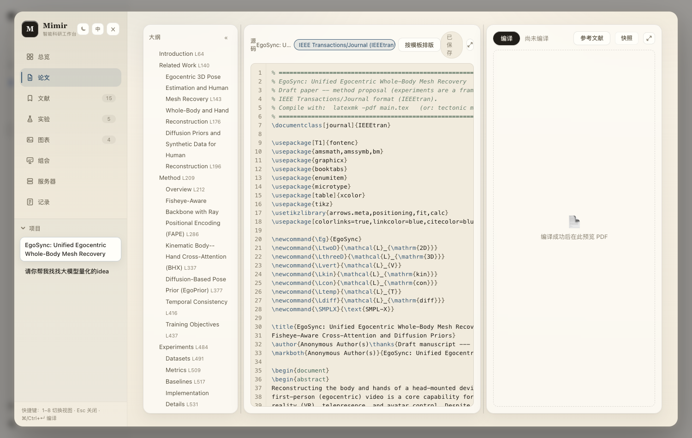
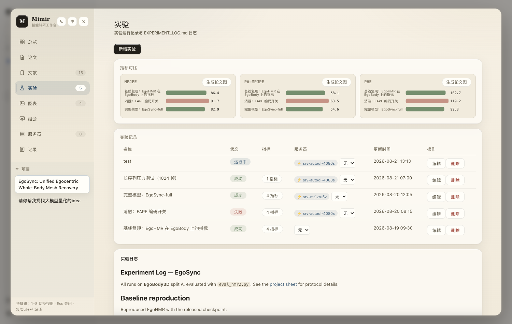
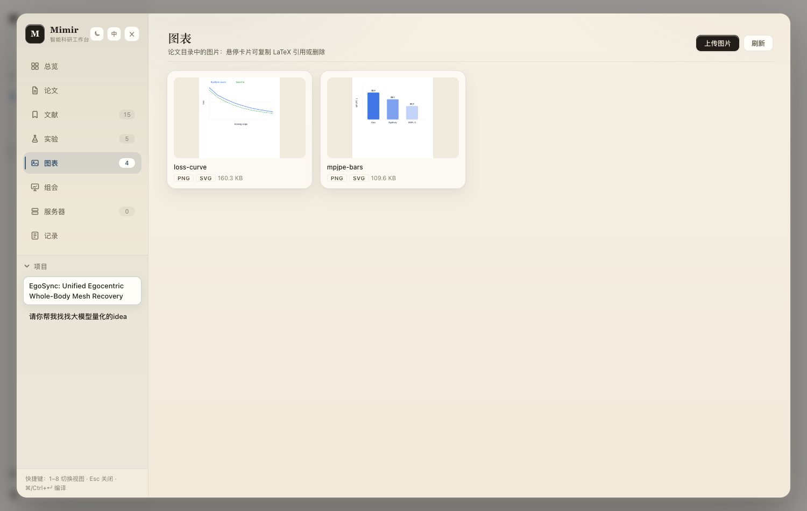
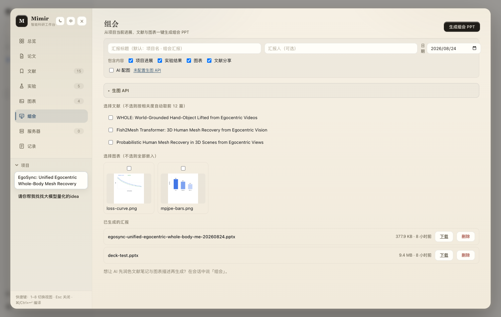
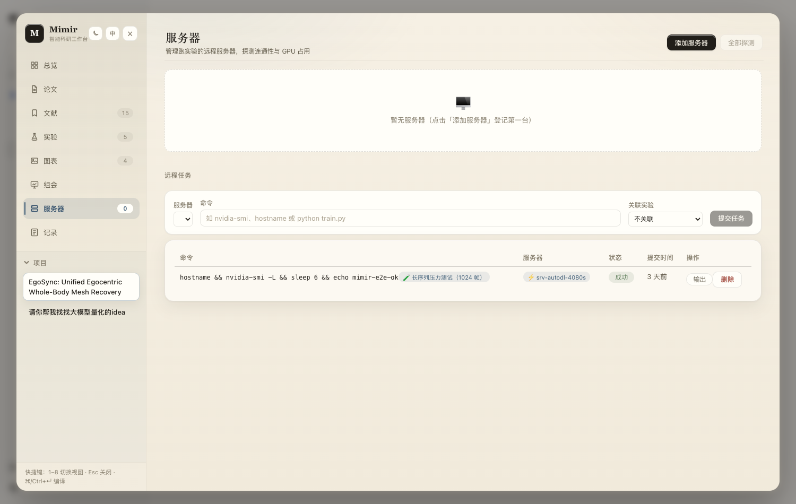
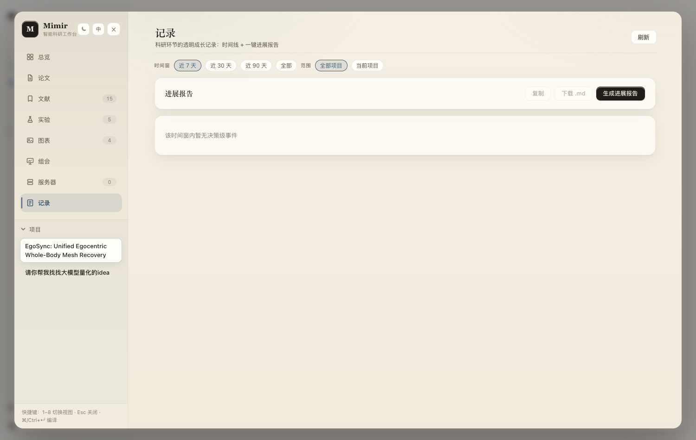

界面一览
点击任意截图放大查看







八个视图覆盖科研的每个环节，数据都在同一个项目里流转
大纲、源码、PDF 三栏同屏，边改边编译；编译成功自动存快照，随时回滚；支持会议模板一键排版。
关键词订阅自动追新，AI 按你的方向打分排序；PDF 全屏阅读，一键进参考文献库，支持 Zotero 同步。
配置、指标、结论结构化记录，指标趋势图自动生成；会话里产出的实验数据自动入库，不再散落各处。
agent 生成的图自动收进图表库，AI 归纳内容并命名；一键插进论文对应位置，图和文再也不脱节。
选中文献和当前进展，一键生成组会汇报：保留论文原图，还能配置生图 API 自动配插画。
SSH 直连 AutoDL 等算力机器，任务提交、状态轮询、日志回传都在面板里完成，训练进度一目了然。
点击任意截图放大查看






需要 Node.js ≥ 22、dsh CLI（npm i -g @deepseek-ai/dsh）和一个 DEEPSEEK_API_KEY
一条命令安装并自动激活，随包装好全部依赖（含 Web 搜索 CLI）。
启动 web 界面，点左侧边栏底部的 Mimir 即可开始。
可选能力：论文编译装 brew install tectonic · Web 搜索跑 bash scripts/setup-web-search.sh（免 Docker 一键 SearXNG）· Zotero 在配置里填 API Key 即可
有问题、想法或想一起共建，随时来聊